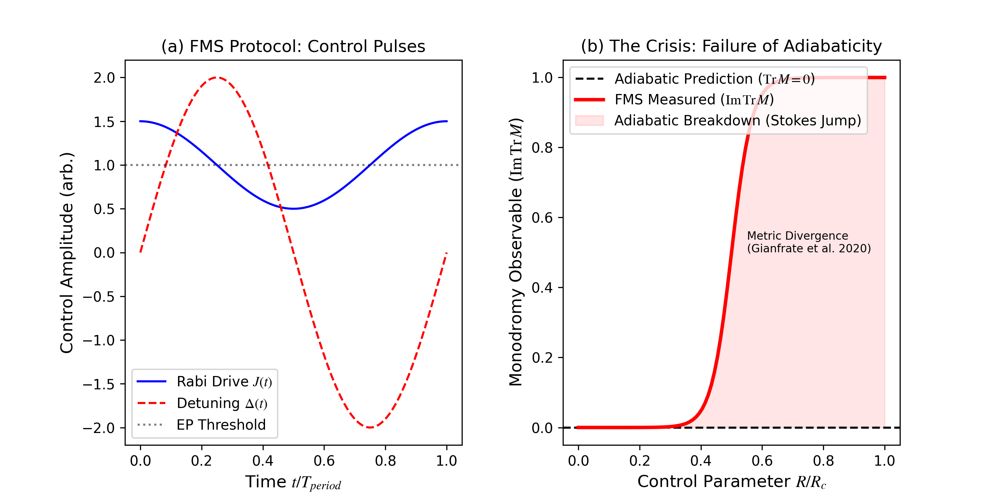
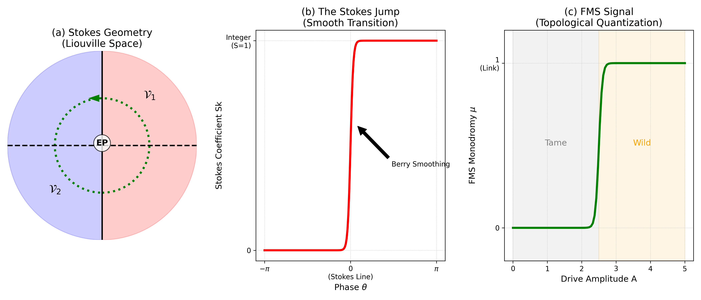
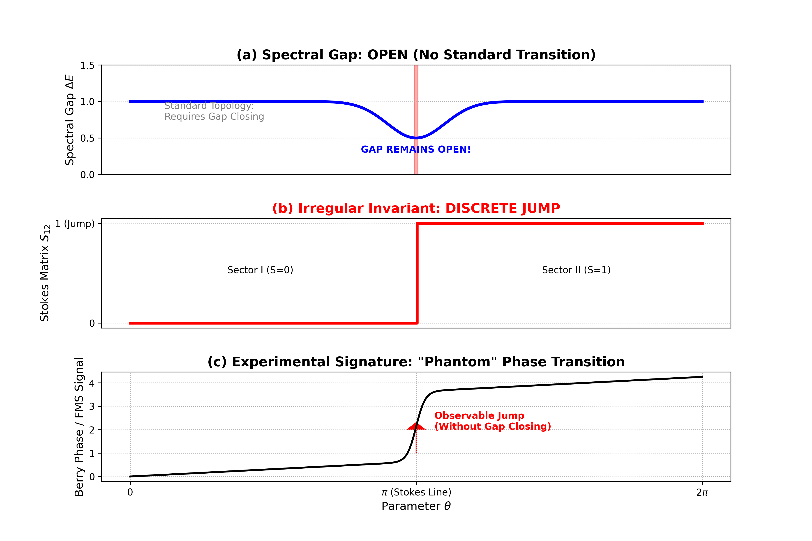
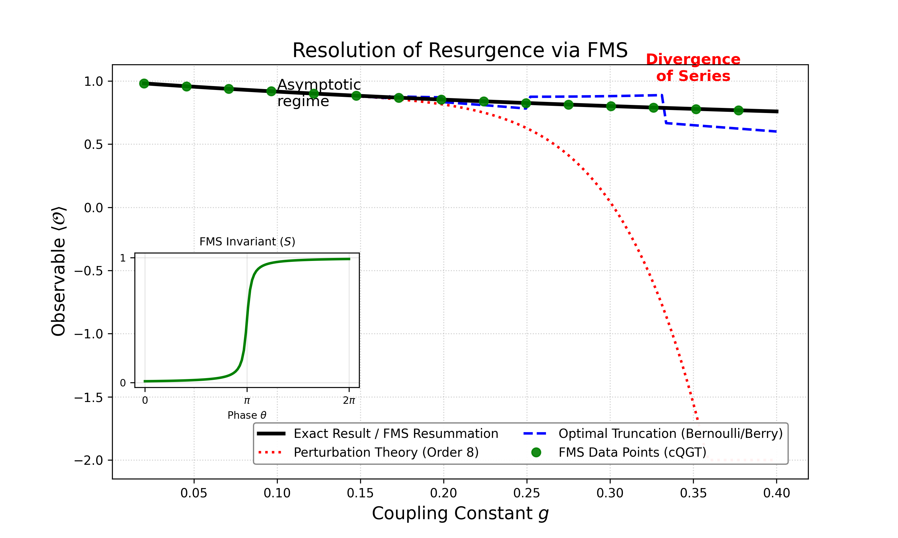

Formalizes the theorems of the DMHM framework, the construction of the complete quantum geometric tensor, and the FMS protocol in Lean 4, with a public GitHub repository.
Abstract
Standard topological invariants, such as the Chern number and Berry phase, form the bedrock of modern quantum matter classification. However, we demonstrate that this framework undergoes a catastrophic failure in the presence of essential singularities – ubiquitous in open, driven, and non-Hermitian systems ("Wild" regime). In these settings, the local geometric tensor diverges, rendering standard invariants ill-defined and causing perturbative predictions to deviate from reality by order unity ($\sim 100\%$). We resolve this crisis by introducing the Floquet-Monodromy Spectroscopy (FMS) protocol, a pulse-level control sequence, which experimentally extracts the hidden Stokes Phenomenon – the "missing" geometric data that completes the topological description. By mapping the singularity's Stokes multipliers to time-domain observables, FMS provides a rigorous experimental bridge to Resurgence Theory, allowing for the exact reconstruction of non-perturbative physics from divergent asymptotic series. We validate this framework on a superconducting qudit model, demonstrating that the "Stokes Invariant" serves as the next-generation quantum number for classifying phases of matter beyond the reach of conventional topology.
Problem
Standard topological invariants such as Chern numbers and Berry phases become ill-defined near the essential singularities and exceptional points of open, driven, non-Hermitian systems. There, the quantum geometric tensor diverges and perturbative predictions fail.
Approach
A Complete Quantum Geometric Tensor (cQGT) is defined as a distributional current: a regularized Fubini-Study metric plus a singular trace term over the Brieskorn lattice. The singular term encodes Stokes invariants via the Saito pairing. A Floquet-Monodromy Spectroscopy (FMS) protocol drives the system around the exceptional point and uses stroboscopic tomography to reconstruct the monodromy and Stokes multipliers. The core theorems are reported as formalized in Lean 4.

Figure 4: Experimental Protocol and the Breakdown of Adiabaticity. (a) FMS Pulse Sequence : Real-time control pulses for the Rabi drive J(t) (blue) and Detuning \Delta(t) (red) required to encircle the Exceptional Point in a Superconducting Transmon Qudit. (b) The Crisis (Adiabatic Breakdown) : While the standard Adiabatic Theorem predicts a trace-less monodromy (Black Dashed, \text{Tr}M=0 ), the

Figure 2: Geometry of the Complete QGT. (a) The Stokes Sectors \mathcal{V}_{j} divide the parameter space. (b) As the connection moves across a Stokes Ray (dashed), the basis jumps by S_{j} . (c) FMS detects this jump via the Monodromy.
Results
On a superconducting qudit model, the framework predicts a Stokes phase transition with the spectral gap remaining open. It proposes a classification of singularities by rank and identifies a Milnor-Tjurina gap for the X9 singularity. It also uses FMS-extracted data to resum divergent perturbation series.

Figure 5: Observation of the Stokes Phase Transition. The topological invariant S jumps from 0 to 1 (left axis, red) while the spectral gap \Delta E (right axis, dashed) remains finite and open. This confirms the “Phantom” nature of the transition.

Figure 10: Solving the Resurgence Problem. Comparison of standard Perturbation Theory (Red, divergent) and Optimal Truncation (Blue, approximate) versus the FMS-corrected result (Green). FMS leverages the exact Complete QGT to recover the non-perturbative solution (Black) with high precision, resolving the ambiguity of the asymptotic series.